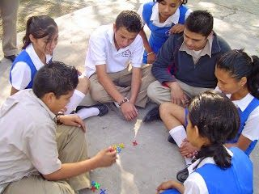

La matatena, también conocida como "yaquis" o "chinas", es un juego tradicional de destreza manual que consiste en lanzar una pelota al aire y recoger varias piezas pequeñas del suelo antes de que la pelota caiga.
Se colocan las 10 matatenas en el suelo. El jugador lanza la pelota hacia arriba y, mientras está en el aire, recoge la cantidad de piezas indicada en la ronda (primero 1, luego 2, después 3, y así hasta 10).
Después de recoger las piezas, debe atrapar la pelota con la misma mano antes de que toque el suelo. Si lo logra, pasa a la siguiente ronda. Si falla, pasa el turno.
También se juega en la versión "con choque". Gana quien complete primero las 10 rondas.
👥 Jugadores: De 2 a 5 participantes.
⏱️ Duración: Cada ronda 30 seg-2 min. Partida: 15-30 min.
🎯 Objetivo: Completar las 10 rondas sin fallar.
🧰 Materiales: 10 matatenas y una pelota de goma.
• Lanza la pelota alta: Más tiempo para recoger.
• Agrupa las piezas: Junta las matatenas antes de lanzar.
• Controla la respiración: Respira profundo antes de cada ronda.
Haz clic en las piezas doradas. ¡Tienes 15 segundos!